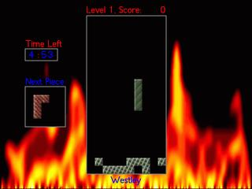

If you are already familiar with Tetris-like games, just read the sections on color gravity and power pieces, then run the game.
Alizarin Tetris generally responds to both the mouse and the keyboard. When you start the game you should see a tetris demo in the center of the screen and the Main Menu to the left. You can use the arrow keys to navigate up and down. Pressing enter or clicking with the mouse on one of the options will either bring up a selection submenu, start an actual game, or quit the program, as appropriate.
The submenus allow you to modify your playing environment. Currently, you can select from different Color Styles, Sound Styles, Piece Styles, and Game Types. The current value for each option is displayed in the main menu.
You can also select the Special Options submenu, which contains a set of toggles for special effects.
Each time you modify one of these options, the demo game will restart
using your new preferences (so you can get a preview of what they
look like without actually playing a game). Also, every time the
demo game restarts it will choose a new computer "personality" (AI
player).
This section describes how to perform basic atris actions (like running the game and controlling falling pieces).
| The object of the game is to clear all of the initial "garbage" from the bottom of the screen. One at a time, randomly chosen pieces will fall from the top center of the board. You can guide them left and right and also rotate them. Eventually they will settle near the bottom. Whenever you completely fill an entire row (that's horizontal!) it disappears and the pieces above it fall down to fill the void. Generally there is some sort of time limit. Eventually, if you keep succeeding, you will advance to the next "level": at higher levels there is more garbage and the pieces fall faster (so you have less time to think). |
|
| If you cannot clear the rows and the pile gets all the way to the top of the screen (such that your next falling piece cannot be placed), you lose that round. |
|
| [ a ] [ Left Arrow ] |
Move your piece left. |
| [ d ] [ Right Arrow ] |
Move your piece right. |
| [ s ] [ Down Arrow ] |
Drop your piece quickly (move again to cancel!). |
| [ w ] [ Up Arrow ] |
Rotate your piece. |
| [ p ] | Pause (or Un-Pause) the game. |
If you are the only person at your keyboard, you can use either (or both) sets of keys. If you are playing with two players at one keyboard, the player on the left uses "wasd" and the player on the right uses the arrow keys.
You may press [ q ] at (just about) any time to quit. From the main menu, you may press [ f ] to toggle full-screen mode (if supported).
|
All of the menus in Alizarin Tetris are "radio menus" in the sense that
only one item from the menu can be selected at any one time. If there are
multiple menus visible on the screen, the currently active one will have a
light border around it. The current selection in each menu will be
highlighted as well. In this shot of the opening
screen, the menu on the right is the active one and "Solo
Normal Game" is the currently selected menu item.
Use the up and down arrow keys to change the selected item in the current menu. Press enter to confirm your selection and move on. You may also just click on your desired choice. Menus may contain more options than can be displayed simultaneously. There is no actual way to tell that this is happening (sorry!). If this is the case, you should use the arrow keys to scroll. If more than one menu is available, you may use the left and right arrow keys to change which menu is selected. Then use the up and down arrows to choose something from that new menu. Or you can just click with the mouse. |
|
| Solo Normal Game | After you choose your personality, you have five total minutes in which to clear boards of your current level three times. If you succeed all three times, you advance to the next level. If you fail (top out, run out of time) all three times you devolve to the previous level. In this game, the time is a hard limit: as soon as it runs out, it's over! |
 |
| Solo Scoring Marathon | After you choose your personality, you have five minutes per level in which to play. If you clear the board, you advance to the next level. The object is to increase your score as much as possible by clearing multiple lines at the same time, so you may want to hang around on a level and rack up more points. Note that the level you getto in Scoring Marathon mode isn't saved. |
|
| Solo vs. Computer | After you choose your personality (and pick your favorite computer player), you will be given a chance to specify a difficulty level for it. This level represents the delay between times when the AI is given a chance to think or move. Low values make for a harder game. High values make for an easy game. If you select 0, the rate will be automatically tied to the current game level. You then have five total minutes in which to clear a board of your current level three times. On your right, the computer player is trying to do the same thing! The other player is given exactly the same garbage as you and exactly the same pieces in exactly the same order, so it's more of a contest of skill. In this (and other multi-player modes) the players can interfere with each other. In this (and other multi-player modes), time is not a hard limit (but see level adjustments below). |
|
| 2 Players, 1 Keyboard | This is for when you and a friend are at the same computer. You each get a different set of keys and you play at the same time, just like in "Solo vs. Computer" mode. Again, each player is trying to clear the board three times in five minutes in order to advance a level. Time is not a hard limit and you can interfere with each other. |
|
| 2 Players, Network | In this mode, you and a friend both have identical versions of Alizarin Tetris running on two different computers that can reach each other via TCP/IP. We have not tested this over modem-speed connections: I recommend 10baseT or better LANs. You must determine beforehand who will be the "server" and who will be the "client". The client must know the hostname (or IP address) of the server. Both players must choose color styles with the same number of colors (but they may choose different styles) and piece styles with the same number of shape (if you do not, the game will issue a warning). Both players will receive identical garbage and falling pieces. The game plays just like "2 Players, 1 Keyboard" except that you see less frequent updates of your opponent's progress on the right. After each level, the player running the server gets to choose when the next level starts, so the client must be ready! |
|
| Computer vs. Computer | In this mode, you pick two AI personalities and watch them duel with each other (as in all of the other multi-player variants above). This is mostly useful because it allows you to pick up on strategy by watching the AI: it often does really stupid things which you should avoid and it often does really clever "look-ahead" type things which you should strive to emulate. |
|
Alizarin Tetris is highly configurable. It supports a variety of styles for the tetris pieces (in color and shape) and the game sounds.
3.1 Color styles
You can stick with the "Default Color Scheme" or you can switch to one of
our pre-made color schemes (e.g., "Deep Blue" or "Textures"). Color styles
just change the way in which the tetris pieces are drawn: they do not
affect game mechanics in any way. [ Note, however, that the "all blue" and
"all grey" styles make for a more difficult game for human players because
the different colors look similar, although not identical. ]
You can also create your own color styles with your own graphics (no need
to recompile!) ... more on that later.
3.2 Sound styles
You can stick with the "Default Sound Style", which includes pretty
standard bells and whistles for thudding pieces, clearing rows, and level
changes. You can also pick "No Sound", which blesses you with silence.
If you specify -q on the command line, "No Sound" will be the
only available choice. A
few other themes are provided. When you choose a new sound style, all of
the associated sounds are played in sequence so that you can get a feel for
them.
You can also create your own sound styles if you have some WAV files lying
around (without recompiling!) ... more on that later.
3.3 Shape styles
You can stick with the "Default Tetris Pieces" (i.e., the planar
tetrominoes) or you can try for something more exciting. As math fans, we
like the planar pentominoes here (think tetris pieces with an "area" of 5
instead of 4), so you can play with them exclusively (hard!) or with all of
the tetris-like pieces that can be made up of 1-5 units.
The other shape styles look difficult at first but they can be a lot of
fun, especially if you're getting bored with standard Tetris.
In an incredible surprise move, you can create your own shape styles as
well. See below.
3.4 Special options
Special options control certain specific characteristics of the game's
mechanics and appearance. They are listed under the Special Options submenu.
Clicking (or pressing return) on a special option toggles its value.
This section details differences between Alizarin Tetris and general tetris
clones.
Table of Contents
4. Game concepts
|
In a multi-player game (AI players count!), if you clear 3 more or rows at
once, your opponent's screen will be obscured for a time. They can
still move and their pieces still fall,
but they cannot see (AI players are prevented from "thinking" but can still
"move"). If you clear 3 or more rows twice in quick succession, the "blank"
timeout extends. In the example screenshot,
the screen for the player on the right has been obscured. When the random
fill-in image reaches the bottom, the normal view returns.
If you clear 5 or more rows at once, an extra row of garbage will be added at the bottom of your opponent's board. Ouch! If you clear 7 or more rows at once (I've never seen this ...), your unlucky opponent gets both the garbage and the blanking. |
|
| You obtain points when you clear rows equal to the number of lines cleared (in one go) multiplied by the square of your current level. In the Solo Scoring Marathon style of game, you can put your name on the high score list at the end. |
|
| You Get | Opponent Gets | What Happened |
|---|---|---|
| You cleared the level under the time limit. | ||
| You cleared the level after the time limit in a game without a hard time limit. | ||
| You "topped out". | ||
| Time ran out in a game with a hard time limit. |
Alizarin Tetris is hardly perfect, although we have gone to some lengths to assure stability and platform independence. This section highlights some SDL pointers, atris limitations and common problems. Our atris FAQ may also be of use. A good place to start for general information is the SDL FAQ List (no really: it's useful!).
5.1 Under Windows
A number of SDL settings are mutable via environment variables. These can
sometimes be a little tricky to set under Windows, though: check your
Control Panel.
If you have trouble:
A number of SDL settings are mutable via environment variables.
If you have trouble:
5.3 Under Macintosh
Known bugs:
If you have trouble:
You can make your own color, shape, and sound styles if you have a
text editor and some raw materials. Just go into the "styles/"
sub-directory and make a copy of one of the small text files there
(say, "Default.Sound" -> "Nifty.Sound"). Now edit your new copy with a
text editor and change the name ("Default Sound Scheme" -> "My Nifty
Sounds"). Then change all of the references to other files ("thud.wav"
-> "my_new_thud.wav"). Re-run Atris: presto! Your choice should be
visible on one of the menus. If there are any load-time problems, they
will be displayed on stdout.
Sound Styles: All sound files must be 11025 Hz mono 8-bit WAV files. The
first line in the file names the style, all of the other non-comment lines
associate a WAV file with an action in the game.
Color Styles: All graphic files must be 20x20 (by 24 bit) Windows-style
Bitmaps. The first line in the file is the name of the style. The second
line must contain a single integer giving the number of distinct colors
(bitmaps) defined by the file. The first bitmap will be used to display the
garbage that starts at the bottom of the screen, the remaining X-1 become
possible values for tiles in tetris pieces. Note that network play requires
that
Piece Styles: The first line gives the name of the style, the next line
gives the number of distinct piece shapes defined by the style. After that
you must define that many individual pieces using our amazing ASCII art
notation. Each piece should be blank-separated from those before and after
it and should be square (i.e., 3x3 or 4x4 but not 4x3).
Limitations: If you make any mistakes with these specification files our
highly advanced parser (cough) will notice and the game will not start.
Check for errors on stdout. The configuration system
is not elegant but it should be quite easy.
Known bugs:
5.2 Under Linux
Known bugs:
Appendix A. Create your own styles
{kind=link}
{kind=link}
{kind=link}
{kind=link}
{kind=link}
{kind=link}
{kind=link}
{kind=link}